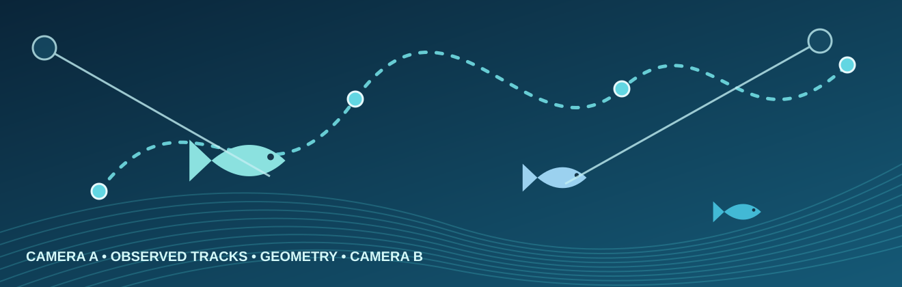

Publication-ready figure workflows
Source:vignettes/articles/publication-figures.Rmd
publication-figures.RmdFigures for research papers and reports
AquaTrajectories includes several distinct plotting families. They are not interchangeable: a physical target XYZ error histogram, a synthetic movement demonstration and a real aquarium occupancy analysis must be reported differently.
Five publication figure families
| Figure | Function | Required outside evidence |
|---|---|---|
| Feeding index + supplied phase labels | aqt_plot_feeding_states() |
Externally computed indices and annotated phases |
| Physical target errors in XYZ | aqt_plot_calibration_comparison() |
Independently surveyed targets, partition and physical units |
| Tank-replicated occupancy curves | aqt_plot_occupancy_timeseries() |
Tank IDs, scenario labels, independently supplied area fraction |
| Event-relative swimming speed | aqt_plot_speed_response() |
Event clocks, speed observations and tank replicates |
| 2D directional rose | aqt_plot_heading_rose() |
XY directional conventions and optional source-frame rasters |
The package visualization source protocol documents expected fields, assumptions and file-export instructions.
Export vector PDF or 300-dpi TIFF
Example of a standard R graphics device, using a documented package plot on synthetic random-walk tracks:
library(aquaTrajectories)
set.seed(306)
tracks <- aqt_simulate_tracks(n_fish=5, n_frames=200)
grDevices::pdf("aqt_synthetic_paths.pdf", width=9, height=6)
tryCatch({
aqt_plot_paths(tracks)
}, finally=grDevices::dev.off())For journals that require TIFF:
grDevices::tiff("figure.tiff", width=3600, height=2400,
res=300, compression="lzw")
tryCatch({
aqt_plot_paths(tracks)
}, finally=grDevices::dev.off())When source coordinates are in pixels or arbitrary units, do not label them centimeters or meters.
Four-panel physical 3D storyboard
aqt_plot_trajectory_storyboard3d()
uses actual supplied physical XYZ tracks with internally consistent axes
and time windows. Missing observations break the path; cumulative
distance is observed, not necessarily total true
movement.
# This example requires existing verified/synthetic XYZ physical tracks.
# Do not create fake z from a one-camera 2D pixel path.
pdf("tank_3d_storyboard.pdf", width = 11, height = 8)
tryCatch({
aqt_plot_trajectory_storyboard3d(
xyz, recent_s = 2, max_gap_s = .1,
tank_limits = list(x=c(0,22), y=c(0,8), z=c(0,11))
)
}, finally = grDevices::dev.off())The numeric limits above reproduce the package’s example bounds and are not claimed to describe a surveyed aquarium.
Optional interactive 3D exploration
aqt_plot_tank_scene3d(),
aqt_plot_school3d()
and aqt_plot_voxel3d()
use optional rgl paths and require appropriate 3D data. The
JavaScript explorer has its own local software interface and research
protocol; the pkgdown website itself is a static documentation site, not
a hosted video-processing backend.

Original vector illustration; not an empirical aquarium frame.